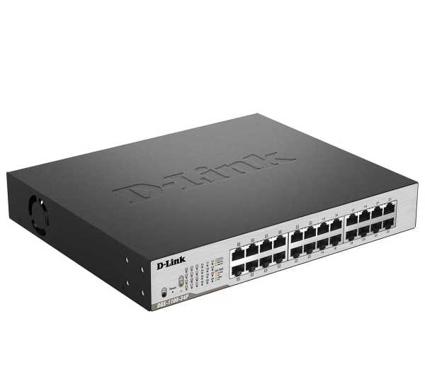
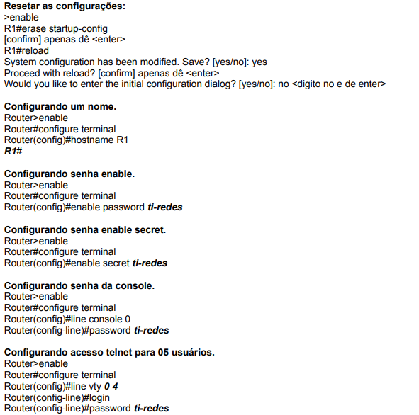
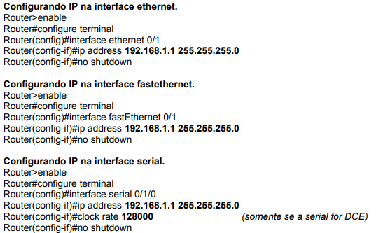
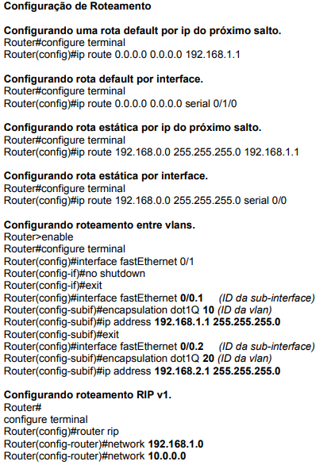
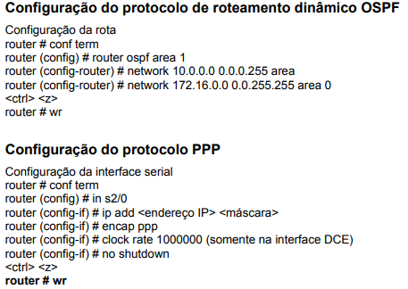

Os switches são os principais componentes de qualquer rede. Eles conectam vários dispositivos, como computadores, access points sem fio, impressoras e servidores na mesma rede, seja em um prédio ou no campus. Um switch permite que os dispositivos conectados compartilhem informações e conversem entre si.
Aqui abaixo são alguns dos comados básicos do switch:
   